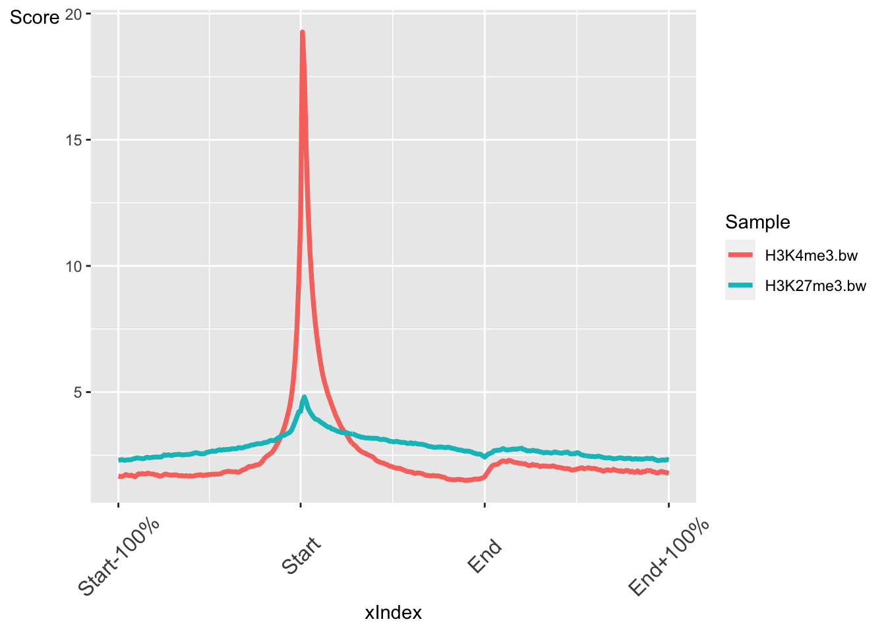
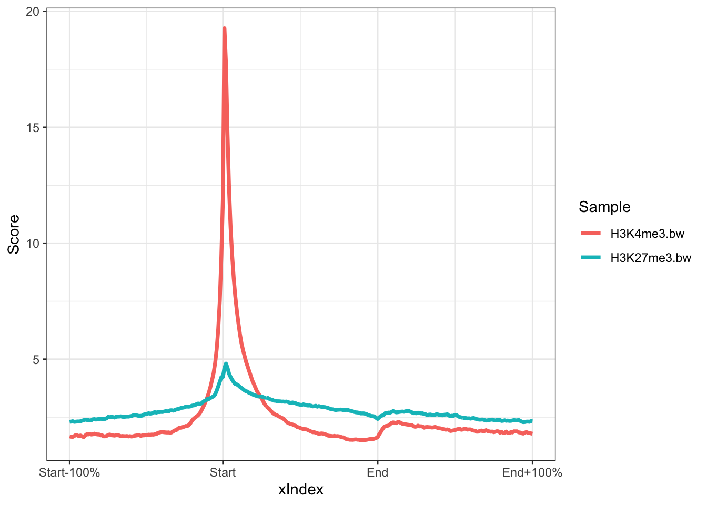
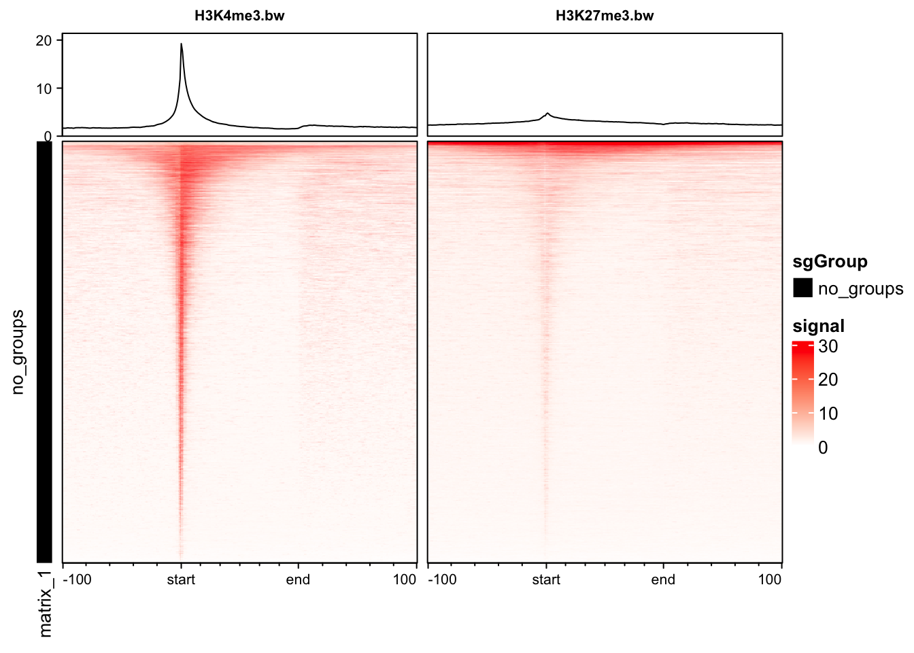
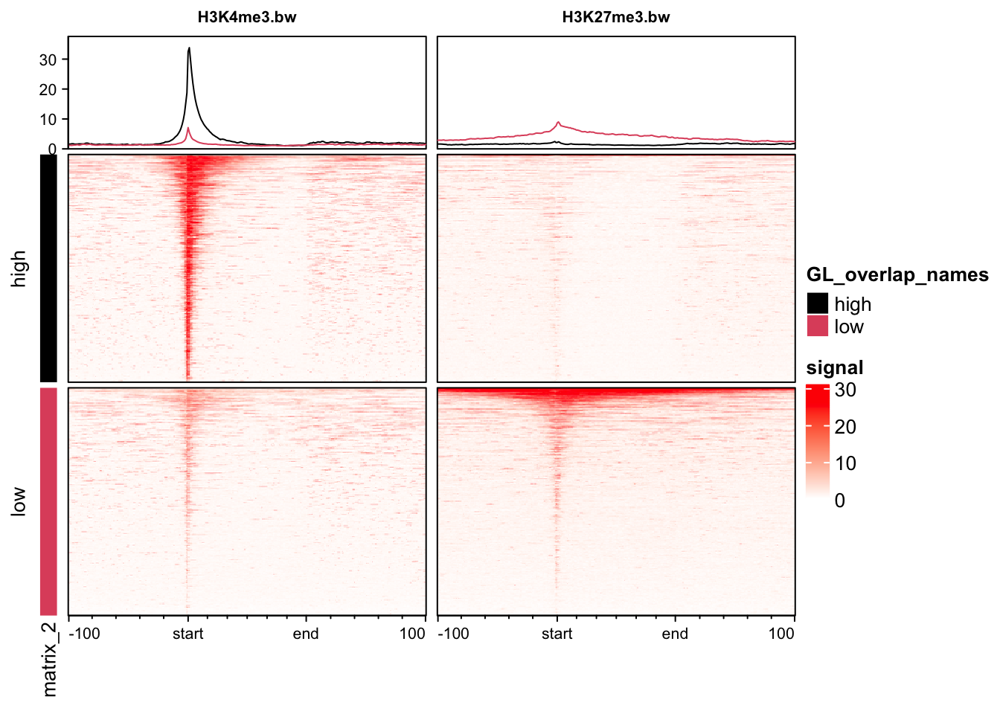
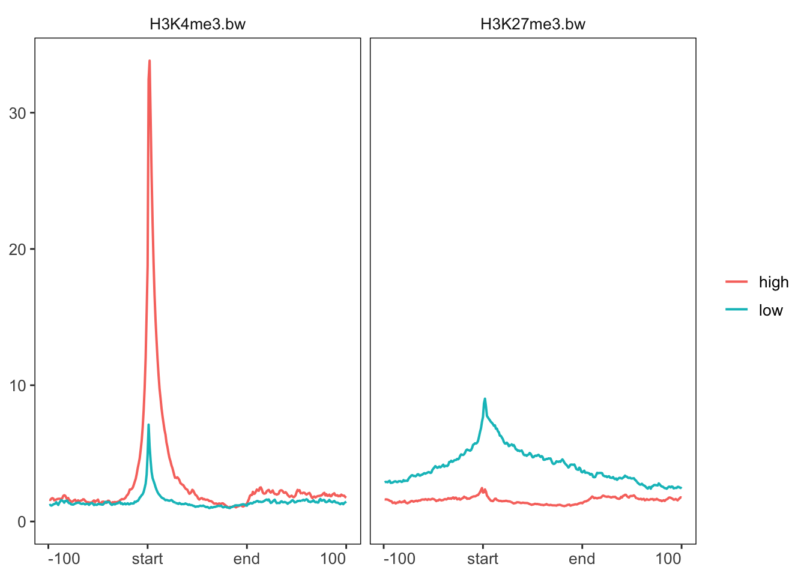

A common task in sequencing analysis is to plot profiles of particular signals across regions of interest. For instance ChIP-seq reads across the TSS regions of genes. You’ve probably guessed by now but there are many different ways to do this in R! Here we will introduce soGGi which is one of the more intuitive packages.
First make sure you have the following datasets from previous lessons:
library(GenomicRanges)
library(genomation)
hg19.genes<-readGeneric("http://bifx-core.bio.ed.ac.uk/genomes/human/hg19/annotation/Ensembl.GRCh37.74.edited.genes.bed",chr = 1,start = 2,end = 3,strand = 6,meta.cols = list(name=4,symbol=5,biotype=7))
hg19.pc.genes<-subset(hg19.genes,hg19.genes$biotype=="protein_coding")Next we need to select the data that we want to plot, these are our tracks. These data are stored in bigWig files and represent coverage profiles of aligned reads across a genome. They have four columns: Chromosome, start_position, end_position, score. In this case, the score represents read depth.
## This is the data we intend to plot. We can supply the file paths of bigWig files directly:
## H3K4me3 ChIP-seq read profiles
H3K4me3.chip<-"http://bifx-core.bio.ed.ac.uk/Shaun/Shaun/training/ROI_workshop/data/H3K4me3.bw"
## H3K27me3 ChIP-seq read profiles
H3K27me3.chip<-"http://bifx-core.bio.ed.ac.uk/Shaun/Shaun/training/ROI_workshop/data/H3K27me3.bw"Load the soGGi library and run the regionPlot function for each track.
library(soGGi)
## The regionPlot function creates a matrix of binned scores across genomic regions. It works with BAM files and bigwig files. Here, we supply a bigWig file and our hg19 protein coding genes.
rp <- regionPlot(bamFile = H3K4me3.chip,testRanges = hg19.pc.genes,format = "bigwig",style = "percentOfRegion")
rp2 <- regionPlot(bamFile = H3K27me3.chip,testRanges = hg19.pc.genes,format = "bigwig",style = "percentOfRegion")Take a look at the rp object. This is a special class of
object called ChIPprofile which contains the GRanges, scores and
metadata.
rp## class: ChIPprofile
## dim: 20306 300
## metadata(2): names AlignedReadsInBam
## assays(1): ''
## rownames(20306): giID1 giID10 ... giID9998 giID9999
## rowData names(4): name symbol biotype giID
## colnames(300): Start-1 Start-2 ... End+99 End+100
## colData names(0):We can now plot the regions as an average profile plot.
## Concatenate the chipProfile objects into a single object
rps <- c(rp,rp2)
## Plot the chpProfiles
plotRegion(rps,colourBy = "Sample")
The output is a ggplot object. This means we can customise the output further with ggplot functions. For instance we can change the theme.
library(ggplot2)
plotRegion(rps,colourBy = "Sample")+theme_bw()
The soGGi[https://www.bioconductor.org/packages/release/bioc/vignettes/soGGi/inst/doc/soggi.pdf] package has many more customisation options for plotting average profiles. Take a look through the tutorial to see how you can adjust the regions to plot, the flank sizes, number of windows and smoothing options.
The profileplyr package has many functions for importing, manipulating and visualising score matrices like the ones we created in soGGi.
library(profileplyr)
## convert chipProfile object to profileplyr object
pp <- as_profileplyr(rps)
## pipe profileplyr object to enrichedHeatmap
pp |> generateEnrichedHeatmap()
The profileplyr[https://www.bioconductor.org/packages/release/bioc/vignettes/profileplyr/inst/doc/profileplyr.html] package leverages many Bioconductor packages to make it easy to manipulate and visualise profile data. It also works with packages outside of R like deepTools.
We can group genes to plot them separately. We are going to plot our histone modification data based on high and low expression of genes from RNA-seq data.
## R ead in gene expression values calculated from RNA-seq data
exp<-read.table("http://bifx-core.bio.ed.ac.uk/Shaun/Shaun/training/ROI_workshop/data/rna-seq_expression.tab",header=T,sep="\t")
## Remove genes with no expression: != means not equal to in R.
exp<-subset(exp,exp$Expression.tpm!=0)
## Order by expression and take the top 2000 gene IDs
high<-exp[order(exp$Expression.tpm,decreasing = T),][1:2000,"geneID"]
low<-exp[order(exp$Expression.tpm,decreasing = F),][1:2000, "geneID"]
## Create a list of high and low expressed gene names
exp_list = list(high = high, low = low)We can now use the groupBy function in profileplyr to group these genes together in plots. Grouping can be performed with gene IDs, as we have done here, and also by overlapping ranges or clustering. See the profileplyr manual for more examples.
## By default, profileplyr expects our ranges to have a column called SYMBOL. This doesn't exist in our data so we are going to copy from the gene names column. This is the quickest way to do this in this tutorial, but there are other methods.
pp@rowRanges$SYMBOL = pp@rowRanges$names
## group by the genes in out expression list
pp |> groupBy(group = exp_list) |> generateEnrichedHeatmap()
We can also pipe the profileplyr functions to create average profile plots similar to the ones created by soGGi.
pp |> groupBy(group = exp_list) |> generateProfilePlot()
In the remaining time, have a look at some of the other Bioconductor packages available and see if you can follow their tutorials. Here are a few ideas: